전기철도기사 (2011-08-21 기출문제)
1과목: 전기철도공학
1. 50kg 궤조인 단선궤조의 특성저항은 몇 Ω인가? (단, 궤조 2개의 병렬로 본드를 포함한 저항은 0.01627Ω/km이고, 누설저항은 0.9Ω·km이다.)
- 0.015
- 0.018
- 0.121
- 0.134
(정답률: 알수없음)

2. VVVF 제어방식이란?
- 주파수와 전류를 제어하는 방식
- 주파수와 저항를 제어하는 방식
- 주파수와 전압를 제어하는 방식
- 주파수와 리액턴스를 제어하는 방식
(정답률: 73%)
3. 가공전차선로에서 양단의 가고가 같고 전차선이 수평인 경우 점 X에서의 행거길이 L[m]은? (단, 경간중앙에서의 이도를 D, 가고 H, 임의의 점 X에서의 이도를 R이라 한다.)
- L=H-D+R
- L=D-H+R
- L=H+D-R
- L=D+H-R
(정답률: 알수없음)
4. 전기철도 직류 급전방식의 특징에 해당되는 것은?
- 운전전류가 적어 대용량의 중거리 및 장거리 수송에 적합하다.
- 사고 발생시 선택차단이 용이하다.
- 통신 유도장해가 크다.
- 절연계급을 낮출 수 있다.
(정답률: 알수없음)
5. 교류 25[kV]급전방식에서 전차선로 가압부분과 대지와의 최소이격거리 [mm]로 알맞은 것은?
- 100[mm]이상
- 150[mm]이상
- 250[mm]이상
- 300[mm]이상
(정답률: 알수없음)
6. 전차선의 편위를 결정하는 요소가 아닌 것은?
- 풍압
- 빙설
- 곡선로
- 차량 동요
(정답률: 알수없음)
7. 전차선 110mm2의 잔존단면적을 67.6mm2으로 할 때 전차선의 허용장력은 몇 [kgf]인가? (단, 전차선의 파괴강도 35[kgf/mm2], 안전율은 2.2이다.)
- 1⑤5
- 1065
- 1075
- 1085
(정답률: 알수없음)
8. 가공전차선과 조가선을 자동장력조정하는 경우 전차선 장력의 변화를 표준장력의 몇 % 이내로 시설하는 것이 좋은가?
- 5
- 10
- 15
- 20
(정답률: 알수없음)
9. 열차를 운전할 때 전력소비량과 직접적인 관련이 없는 것은?
- 가속도
- 챠량중량
- 구배구간
- 팬타그래프
(정답률: 알수없음)
10. 전차선의 장력을 T, 단위길이당의 질량을 ρ라 할 때 파동전파속도 C를 나타내는 식은?
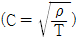
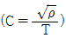
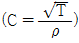
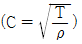
(정답률: 알수없음)
11. 교류변전설비의 연장급전 및 이종전원을 구분하기 위한 설비는?
- 변압기포스트
- 보조급전구분소
- 타이포스트
- 급전구분소
(정답률: 알수없음)
12. 전차선의 무효부분은 그 길이가 얼마 이상에 한하여 조가선으로 대체 사용할 수 있는가?
- 15[m]
- 20[m]
- 25[m]
- 30[m]
(정답률: 알수없음)
13. 정류기의 3상 전파방식에서 평균값 E를 표시하는 식은? (단, V는 선간전압이다.)
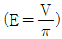
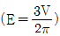
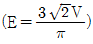
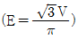
(정답률: 알수없음)
14. 직류변전설비의 급전구분소 역할로 거리가 가장 먼 것은?
- 전차선로의 전압강하를 증강
- 고장검출의 용이
- 사고구간을 한정구분
- 사고나 작업시 정전구간의 단축
(정답률: 알수없음)
15. 우리나라 교류 전철 계통에 사용되는 주변압기(MTR)는 무슨 방식으로 결선되어 있는가?
- 스코트 결선 방식
- Y-Y결선 방식
- △-△ 결선 방식
- △-Y 결선 방식
(정답률: 알수없음)
16. 고속철도에서 가공전차선의 표준높이[mm]로 맞는 것은?
- 레일면상 5000
- 레일면상 5080
- 레일면상 5100
- 레일면상 5200
(정답률: 알수없음)
17. 교류 전기철도 강체 R-Bar 가선방식에서 지지점의 표준간격을 몇 m로 하고 있는가?
- 5
- 10
- 15
- 20
(정답률: 알수없음)
18. 교류 전철 흡상변압기 방식에서 전차선과 부급 전선의 최저 전압은 몇 [V]까지 허용하고 있는가?
- 19000
- 22500
- 25000
- 27500
(정답률: 알수없음)
19. 주로 모노레일이나 경량전철에 사용되는 가선방식은?
- 강체 단선식
- 강체 복선식
- 가공 단선식
- 가공 복선식
(정답률: 알수없음)
20. 고속철도 전차선 4경간의 에어섹션에서 주축전주 (2e 및 2i) 쌍브래킷의 간격[m]은?
- 1.4
- 1.6
- 1.8
- 2.0
(정답률: 알수없음)
2과목: 전기철도 구조물공학
21. 작용하중에 의해 부재에 발생하는 내력이 아닌 것은?
- 축력
- 전단력
- 횡모멘트
- 반력
(정답률: 알수없음)
22. a=60°, P1=30[kgf], P2=20[kgf]일 때 힘의 합력[kgf]은 약 얼마인가?
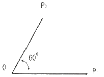
- 43.6
- 49.2
- 50
- 56.2
(정답률: 알수없음)
23. 5cm×5cm의 정방형 단면의 강봉(鋼捧)이 있다. 여기에 10톤의 인장력이 작용될 경우 인장응력[kgf/cm2]은? (단, 이 강봉의 길이는 10cm라고 한다.)
- 250
- 400
- 2500
- 4000
(정답률: 알수없음)
24. 지선과 전주와의 표준 취부각도는 45°로 하고 있다. 최소 취부각도는 얼마인가?
- 25°
- 30°
- 35°
- 40°
(정답률: 알수없음)
25. 전파속도 250[m/μs], 뢰의 파두장이 1.5[μs]일 때 피뢰기의 직선적 유효보호 범위 [m]는?
- 170.5
- 187.5
- 197.5
- 207.5
(정답률: 알수없음)
26. 레일의 곡선반경이 900[m]인 가공 전차선로에서 전차선 편위를 150[mm]로 유지하고자 할 경우 전철주의 경간 [m]은 약 얼마인가?
- 40.62
- 42.62
- 44.48
- 46.48
(정답률: 알수없음)
27. 가공전차선로에서 급전선에 사용되는 경동선의 안전율은 인장하중에 대하여 얼마 이상이어야 하는가? (단, 케이블인 경우는 제외한다.)
- 2.0
- 2.2
- 2.5
- 3.0
(정답률: 알수없음)
28. 변전소, 구분소 등에서 급전선, 부급전선 등을 인출하거나 지지하기 위하여 설비되는 고정빔으로 산형강 또는 강관 등을 사용하는 구조의 빔(Beam)은?
- 인출용빔
- 지지빔
- 평면빔
- 인류빔
(정답률: 알수없음)
29. 전차선로에 설치된 단독지지주에서 지지점의 높이 6.4[m]인 전차선에 수평집중하중 148[kgf]가 작용할 때 지면과의 경계점 모멘트[kgf·m]는?
- 847.2
- 947.2
- 1047.2
- 1147.2
(정답률: 알수없음)
30. 다음 구조물 중 1차원의 구조물이 아닌 것은?
- 기둥
- 샤프트
- 슬래브
- 원통
(정답률: 알수없음)
31. 전철전주의 건식이 곤란한 개소에 고정비임이나 터널천정에서 아래로 설치하여 가동브래키트, 곡선당김장치 등을 지지하기 위한 지지물은?
- 완철
- 하수강
- 지선
- 비임
(정답률: 알수없음)
32. 가공전차선로의 인류용 전주에 단지선을 설치하는 경우 지선용 재료의 항장력(P)을 구하는 산출식은? (단, T:수평외력[kgf], θ:지선이 전주와 이루는 각도, 지선의 안전율은 2.5)
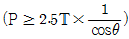
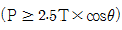
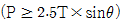
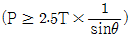
(정답률: 알수없음)
33. 구조물의 전체 부정정차수가 0보다 큰 경우, 어떻게 판별할 수 있겠는가?
- 안정
- 정정
- 불안정
- 부정정
(정답률: 알수없음)
34. 애자의 연결길이 360[mm], 전기적 절연최소 이격거리 250[mm], 여유 20[mm], 고리판 금구두께 5[mm]라면 전주 대용물의 높이 [mm]는?
- 635
- 630
- 615
- 610
(정답률: 알수없음)
35. 구조물에 가해지는 풍압(P)을 구하는 계산식은? (단, P: 풍압[kgf], A:바람을 받는 물체의 수직 투영 면적 [m2], Vx:풍속[m/s], Cx:풍력계수이다.)
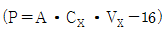
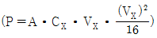
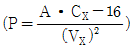
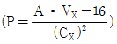
(정답률: 알수없음)
36. 기둥형 전주 기초를 터파기할 때 토양과 기초재의 접촉면에서의 강도 차를 보정하는데 사용하는 계수는?
- 지형계수(K)
- 강도계수(So)
- 형상계수(f)
- 안전율(Fs)
(정답률: 알수없음)
37. 지표면에서 높이가 12m인 단독 지지주에 30[kgf/m]의 수평분포하중이 작용하는 경우 지면과의 경계점 모멘트[kgf·m]는?
- 1080
- 1520
- 2160
- 5400
(정답률: 알수없음)
38. 선로와 직각방향으로 가해지는 전선의 풍압하중[kgf]을 구하는 계산식은? (단, Pw0:단위풍압하중[kgf/m], S:경간[m]라 한다.)
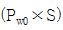
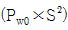
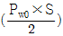
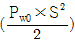
(정답률: 알수없음)
39. 지름이 D인 원형 단면보에 횡모멘드 M이 작용할 때 최대 횡응력도는 얼마인가?
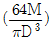
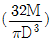
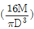
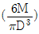
(정답률: 알수없음)
40. 휨모멘트와 전단력의 관계에 대한 설명 중 옳은 것은?
- 전단력이 최대인 점에서는 휨모멘트도 최대이다.
- 전단력이 직선이면 휨모멘트도 직선이다.
- 전단력이 0이 되는 단면에서 최대 휨모멘트가 생긴다.
- 전단력이 최대인 단면에서 휨모멘트는 최소이다.
(정답률: 알수없음)
3과목: 전기자기학
41. 변위전류와 관계가 가장 깊은 것은?
- 반도체
- 유전체
- 자성체
- 도체
(정답률: 알수없음)
42. 비투자율은? (단, μ0는 진공의 투자율, Xm은 자화율이다.)
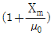
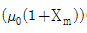
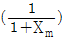
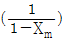
(정답률: 알수없음)
43. 대전도체 내부의 전위는?
- 진공 중의 유전율과 같다.
- 항상 0이다.
- 도체표면 전위와 동일하다.
- 대지전압과 전하의 곱으로 표시한다.
(정답률: 알수없음)
44. 어떤 막대꼴 철심이 있다. 단면적이 0.5m2, 길이가 0.8m, 비투자율이 20이다. 이 철심의 자기저항 [AT/Wb]은?
- 6.37×104
- 4.45×104
- 3.67×104
- 1.76×104
(정답률: 알수없음)
45. 간격 d[m]의 평행판 도체에 V[kV]의 전위차를 주었을 때 음극 도체판을 초속도 0으로 출발한 전자 e[C]이 양극 도체판에 도달할 때의 속도는 몇 [m/s]인가? (단, m[kg]은 전자의 질량이다.)
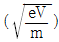
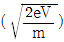
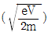
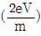
(정답률: 알수없음)
46. 15A의 무한장 직선 전류로부터 50cm 떨어진 P점의 자계의 세기는 약 몇 [AT/m]인가?
- 1.56
- 2.39
- 4.78
- 9.55
(정답률: 알수없음)
47. 내부장치 또는 공간을 물질로 포위시켜 외부 자계의 영향을 차폐시키는 방식을 자기차폐라 한다. 다음 중 자기차폐에 가장 좋은 것은?
- 강자성체 중에서 비투자율이 큰 물질
- 강자성체 중에서 비투자율이 작은 물질
- 비투자율이 1보다 작은 역자성체
- 비투자율에 관계없이 물질의 두께에만 관계되므로 되도록 두꺼운 물질
(정답률: 알수없음)
48. 다음 식 중 옳지 않은 것은?
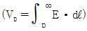
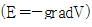
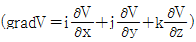
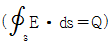
(정답률: 알수없음)
49. 반지름 a, b(a<b)인 동심 원통전극 사이에 고유저항 ρ의 물질이 충만된어 있을 때 단위길이당의 저항은?
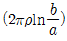
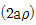
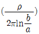
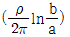
(정답률: 알수없음)
50. 패러데이 법칙에서 유도기전력 e[V]를 옳게 표현한 것은?
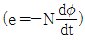
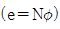
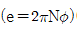
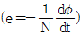
(정답률: 알수없음)
51. 변의 길이가 각각 a[m], b[m]인 그림과 같은 직사각형 도체가 X축 방향으로 v[m/s]의 속도로 움직이고 있다. 이때 자속밀도는 X-Y평면에 수직이고 어느 곳에서든지 크기가 일정한 B[Wb/m2]이다. 이 도체의 저항을 R[Ω]이라고 할 때 흐르는 전류는 몇 [A]인가?
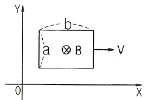
- 0
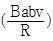
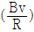
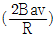
(정답률: 알수없음)
52. 200V, 30W인 백열전구와 200V, 60W인 백열전구를 직렬로 접속하고, 200V의 전압을 인가하였을 때 어느 전구가 더 어두운가? (단, 전구의 밝기는 소비전력에 비례한다.)
- 둘 다 같다.
- 30W 전구가 60W 전구보다 더 어둡다.
- 60W 전구가 30W 전구보다 더 어둡다.
- 비교할 수 없다.
(정답률: 알수없음)
53. B-H곡선을 자세히 관찰하면 매끈한 곡선이 아니라 B가 계단적으로 증가 또는 감소함을 알 수 있다. 이러한 현상을 무엇이라 하는가?
- 퀴리점(Curie point)
- 자기여자효과(magnetic after effect)
- 자왜현상(magneto-striction effect)
- 바크하우젠 효과(Barkhausen effect)
(정답률: 알수없음)
54. 쌍극자의 중심을 좌표 원점으로 하여 쌍극자 모멘트 방향을 x축, 이와 직각 방향을 y축으로 할 때 원점에서 같은 거리 r만큼 떨어진 점의 y방향의 전계의 세기가 가장 작은 점은 x축과 몇 도의 각을 이룰 때인가?
- 0°
- 30°
- 60°
- 90°
(정답률: 알수없음)
55. 3개의 콘덴서 C1=1㎌, C2=2㎌, C3=3㎌를 직렬 연결하여 600V의 전압을 가할 때, C1 양단 사이에 걸리는 전압 약 몇 [V]인가?
- 55
- 164
- 327
- 382
(정답률: 알수없음)
56. 접지된 구도체와 점전하 간에 작용하는 힘은?
- 항상 흡인력이다.
- 항상 반발력이다.
- 조건적 흡인력이다.
- 조건적 반발력이다.
(정답률: 알수없음)
57. 진공 중에서 빛의 속도와 일치하는 전자파의 전파속도를 얻기 위한 조건으로 맞는 것은?
- εs=0, μs=0
- εs=0, μs=1
- εs=1, μs=0
- εs=1, μs=1
(정답률: 알수없음)
58. 지름 10cm의 원형코일에 1A의 전류를 흘릴 때 코일 중심의 자계를 1000A/m로 하려면 코일을 몇 회 감으면 되는가?
- 50
- 100
- 150
- 200
(정답률: 알수없음)
59. 유전율이 10인 유전체를 5V/m인 전계 내에 놓으면 유전체의 표면전하밀도는 몇 [C/m2]인가? (단, 유전체의 표면과 전계는 직각이다.)
- 0.5
- 1.0
- 50
- 250
(정답률: 알수없음)
60. 전기력선의 설명 중 틀린 것은?
- 전기력선의 방향은 그 점의 전계의 방향과 일치하며 밀도는 그 점에서의 전계의 크기와 같다.
- 전기력선은 부전하에서 시작하여 정전하에서 그친다.
- 단위 전하에서는 1/ε0개의 전기력선이 출입한다.
- 전기력선은 전위가 높은 점에서 낮은 점으로 향한다.
(정답률: 알수없음)
4과목: 전력공학
61. 그림과 같은 유황곡선을 가진 수력지점에서 최대사용수량 OC로 1년간 계속 발전하는데 필요한 저수지의 용량은?
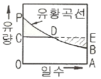
- 면적 OCPBA
- 면적 OCDBA
- 면적 DEB
- 면적 PCD
(정답률: 알수없음)
62. 1상의 대지정전용량 C[F], 주파수 f[Hz]인 3상 송전선의 소호리액터 공진탭의 리액턴스는 몇 [Ω]인가? (단, 소호리액터를 접속시키는 변압기의 리액턴스는 Xt[Ω]이다.)
(정답률: 알수없음)
63. 철탑의 탑각 접지저항이 커지면 우려되는 것으로 옳은 것은?
- 뇌의 직격
- 역섬락
- 가공지선의 차폐각 증가
- 코로나 증가
(정답률: 알수없음)
64. 유효낙차 100m, 최대사용수량 20m3/sec, 수차효율 70%인 수력발전소의 연간 발전전력량은 약 몇 [kWh] 정도 되는가? (단, 발전기의 효율은 85%라고 한다.)
- 2.5×107
- 5×107
- 10×107
- 20×107
(정답률: 알수없음)
65. 부하역률이 cosθ인 경우의 배전선로의 전력손실은 같은 크기의 부하전력으로 역률이 1인 경우의 전력손실에 비하여 몇 배인가?
- 1/cos2θ
- 1/cosθ
- cosθ
- cos2θ
(정답률: 알수없음)
66. 다음 중 그 값이 1 이상인 것은?
- 부등률
- 부하율
- 수용률
- 전압강하율
(정답률: 알수없음)
67. 화력발전소의 기본 사이클의 순서가 옳은 것은?
- 급수펌프 → 보일러 → 과열기 → 터빈 → 복수기 → 다시 급수펌프로
- 과열기 → 보일러 → 복수기 → 터빈 → 급수펌프 → 축열기 → 다시 과열기로
- 급수펌프 → 보일러 → 터빈 → 과열기 → 복수기 → 다시 급수펌프로
- 보일러 → 급수펌프 → 과열기 → 복수기 → 급수펌프 → 다시 보일러로
(정답률: 알수없음)
68. 단로기에 대한 설명으로 적합하지 않은 것은?
- 소호장치가 있어 아크를 소멸시킨다.
- 무부하 및 여자전류의 개폐에 사용된다.
- 배전용 단로기는 보통 디스컨넥팅바로 개폐한다.
- 회로의 분리 또는 계통의 접속 변경시 사용한다.
(정답률: 알수없음)
69. 차단은 쉽게 가능하나 재점호가 발생하기 쉬운 차단은 어느 것인가?
- R-L 회로 차단
- 단락전류 차단
- L 회로 차단
- C 회로 차단
(정답률: 알수없음)
70. 수전단 전력원의 방정식이 으로 표현되는 전력계통에서 무부하시 수전단전압을 일정하게 유지하는데 필요한 조상기의 종류와 조상용량으로 알맞은 것은?
- 진상무효전력 100
- 지상무효전력 100
- 진상무효전력 200
- 지상무효전력 200
(정답률: 알수없음)
71. 그림과 같이 3300V, 비접지식 배전선로에 접속된 주상 변압기의 1차와 2차 간에 고저압 혼촉고장이 발생하였을 경우, X표시 한 부분의 대지전위는 몇 [V]인가? (단, 접지저항은 20Ω, 접지저항에 흐르는 지락전류는 5A이다.)
- 3300/√3
- 3300√3
- 3300
- 100
(정답률: 알수없음)
72. 송전선의 중성점을 접지하는 이유가 아닌 것은?
- 코로나를 방지한다.
- 기기의 절연강도를 낮출 수 있다.
- 이상전압을 방지한다.
- 지락 사고선을 선택 차단한다.
(정답률: 알수없음)
73. 송전계통의 안정도를 향상시키기 위한 방법이 아닌 것은?
- 계통의 직렬리액턴스를 감소시킨다.
- 속응 여자 방식을 채용한다.
- 여러 개의 계통으로 계통을 분리시킨다.
- 중간 조상 방식을 채택한다.
(정답률: 알수없음)
74. 피뢰기의 충격방전 개시전압은 무엇으로 표시하는가?
- 직류전압의 크기
- 충격파의 평균치
- 충격파의 최대치
- 충격파의 실효치
(정답률: 알수없음)
75. 동기 조상기와 전력용 콘덴서를 비교할 때 전력용 콘덴서의 장점으로 맞는 것은?
- 진상과 지상의 전류 공용이다.
- 전압조정이 연속적이다.
- 송전선의 시충전에 이용 가능하다.
- 단락고장이 일어나도 고장전류가 흐르지 않는다.
(정답률: 알수없음)
76. 중거리 및 장거리 송전선로에서 페란티 효과의 발생원인으로 볼 수 있는 것은?
- 선로의 누설컨덕턴스
- 선로의 누설전류
- 선로의 정전용량
- 선로의 인덕턴스
(정답률: 알수없음)
77. 송전계통에서 절연 협조의 기본이 되는 사항은?
- 애자의 섬락전압
- 권선의 절연내력
- 피뢰기의 제한전압
- 변압기 부싱의 섬락전압
(정답률: 알수없음)
78. 배전계통에서 전력용 콘덴서를 설치하는 목적으로 가장 타당한 것은?
- 전력손실 감소
- 개폐기의 차단능력 증대
- 고장시 영상전류 감소
- 변압기손실 감소
(정답률: 알수없음)
79. 전선에 전류가 흐르면 열이 발생한다. 이 경우 관계되는 법칙은?
- 패러데이 법칙
- 쿨롱의 법칙
- 옴의 법칙
- 줄의 법칙
(정답률: 알수없음)
80. 단상 2선식 배전선로의 송전단 전압 및 역률이 각각 400V, 0.9이고 수전단 전압 및 역률이 각각 380V, 0.8일 때 전력손실은 몇 [W]인가? (단, 부하전류는 10[A]이다.)
- 560
- 640
- 820
- 2000
(정답률: 알수없음)
1/특성저항 = 1/병렬로 연결된 저항의 합
따라서, 두 개의 병렬로 연결된 궤조의 특성저항은 다음과 같이 계산할 수 있다.
1/특성저항 = 1/0.01627 + 1/0.01627
1/특성저항 = 61.44
특성저항 = 0.01627/61.44
특성저항 = 0.000264
누설저항을 고려하여 총 저항을 계산하면 다음과 같다.
총 저항 = 병렬 저항의 합 + 누설저항
총 저항 = 0.01627/61.44 + 0.9
총 저항 = 0.000264 + 0.9
총 저항 = 0.900264
따라서, 50kg 궤조인 단선궤조의 특성저항은 0.121Ω이 된다.